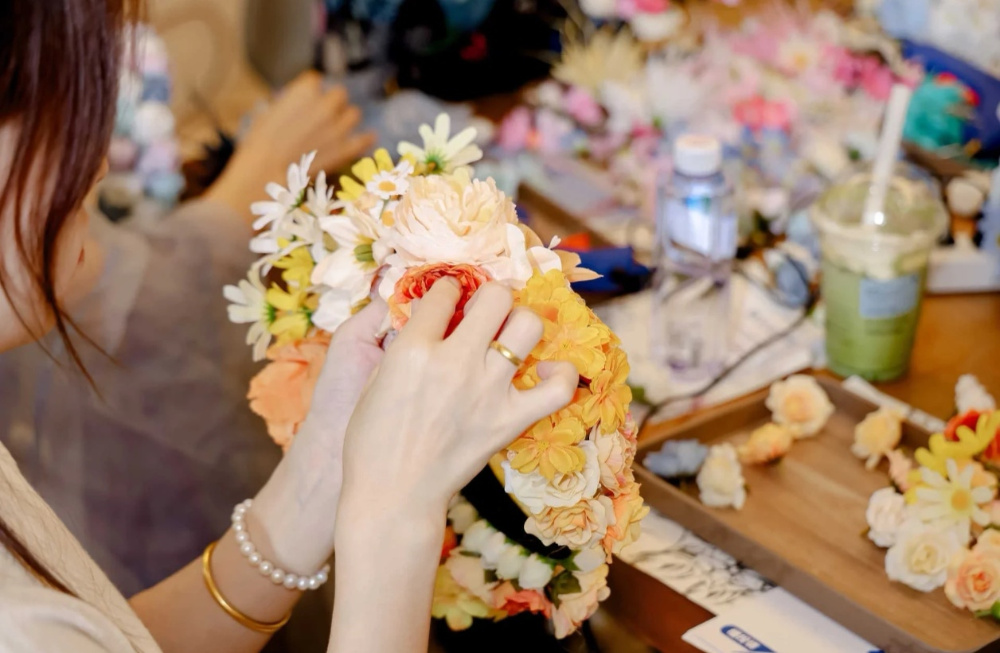
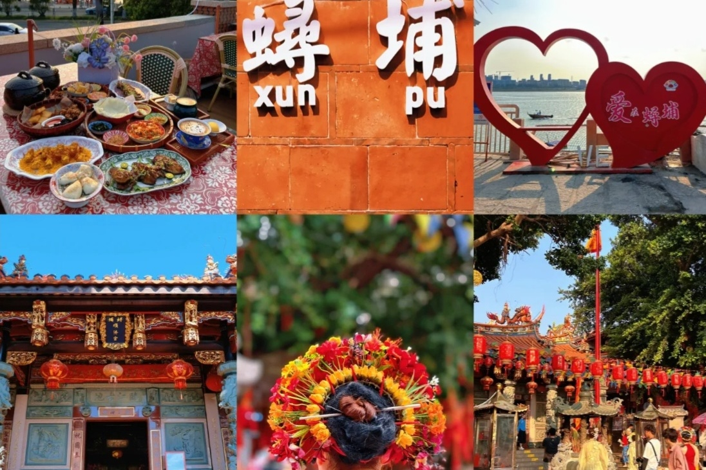
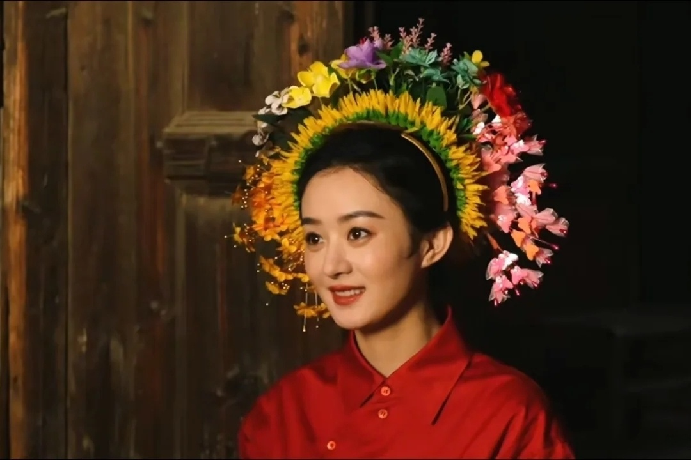
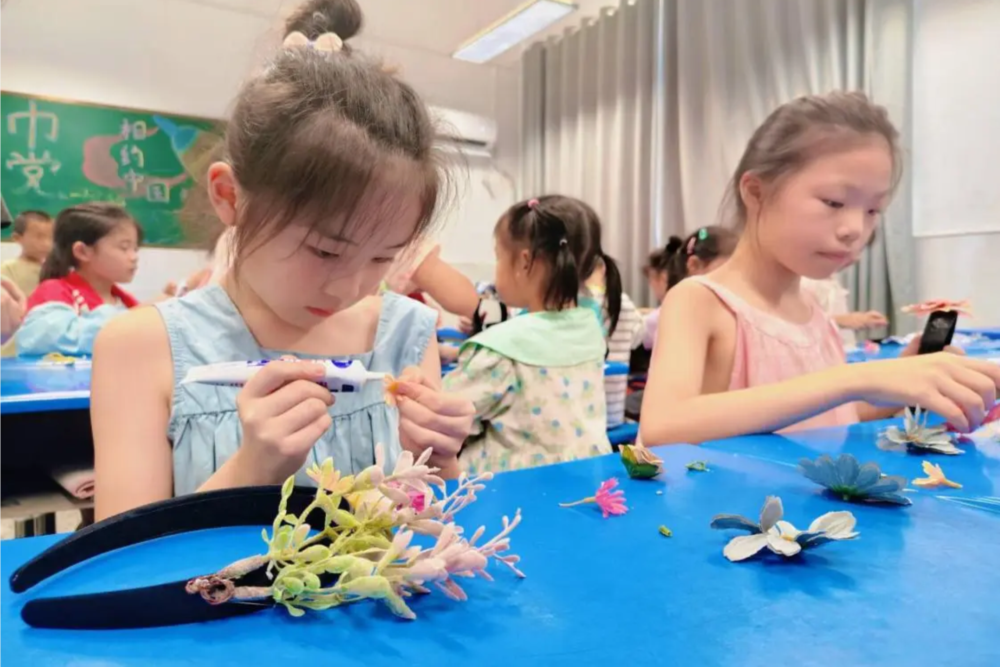
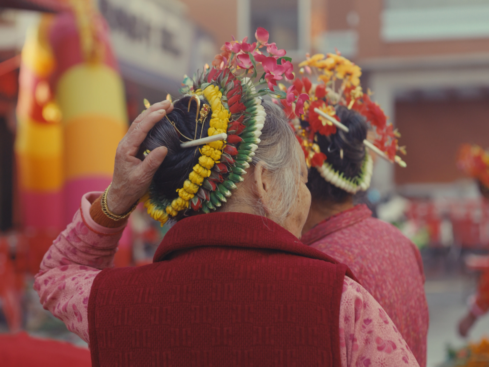
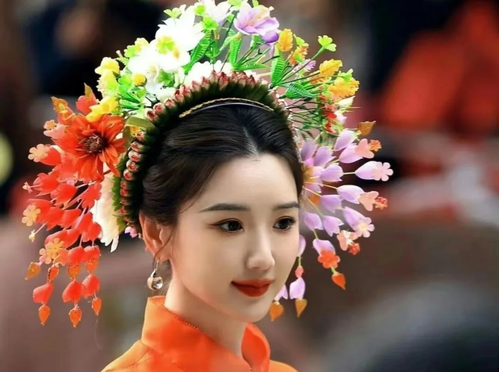
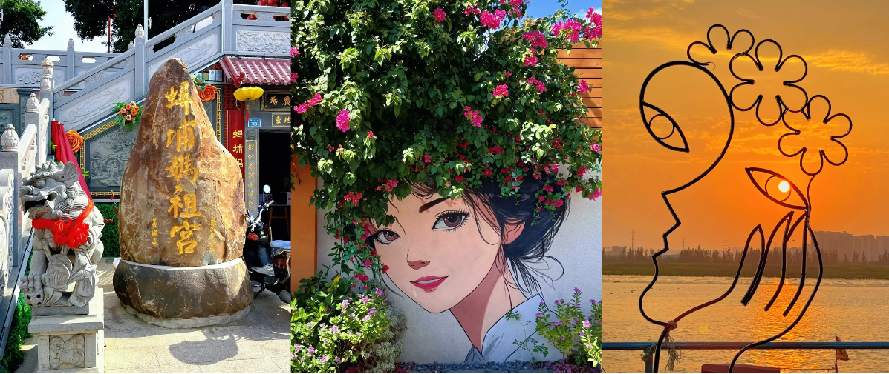

亲手制作专属花围，感受鲜花入发的浪漫。

漫步蟳埔古厝，体验海洋文化与海丝风情。

专业造型跟拍，定格国风高光。

走进校园与社区，传播传统文化。

蟳埔簪花不再只是渔村传统装扮，在新时代不断焕发新生。依托文旅打卡、短视频传播，它走出泉州，被更多人看见；设计师把簪花元素融入服饰、文创、国风设计，让古老民俗适配现代审美。同时数字化记录、线上展厅、非遗研学持续开展，年轻传承人不断加入，在守住传统内核的前提下创新表达，让渔家浪漫代代延续，在当代持续生长。

蟳埔簪花不再只是渔村传统装扮，在新时代不断焕发新生。依托文旅打卡、短视频传播，它走出泉州，被更多人看见；设计师把簪花元素融入服饰、文创、国风设计，让古老民俗适配现代审美。同时数字化记录、线上展厅、非遗研学持续开展，年轻传承人不断加入，在守住传统内核的前提下创新表达，让渔家浪漫代代延续，在当代持续生长。

蟳埔簪花自渔村渔涂走来，不再只是海风一隅独有的渔家妆扮。青春活力注入古老民俗，传统簪花遇见新潮表达，在大众的目光里续写新的篇章。古老花围承载代代相传的美好祈愿，以鲜活的姿态走出乡土，让非遗在新时代持续绽放浪漫光彩。